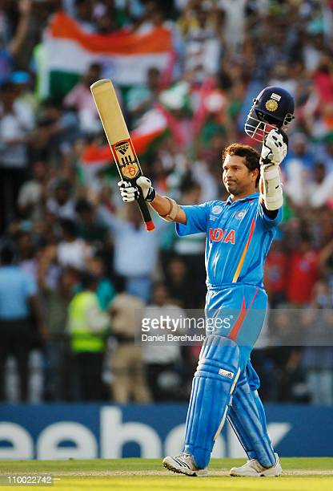

Earlier Life
Tendulkar was born at Nirmal Nursing Home in Dadar, Bombay on 24 April 1973 to a Rajapur Saraswat Brahmin Maharastrian Marathi family.His father, Ramesh Tendulkar, was a Marathi-language novelist and poet while his mother, Rajni, worked in the insurance industry.Tendulkar's father named him after his favourite music director, Sachin Dev Burman.Tendulkar has three older siblings: two half-brothers Nitin and Ajit, and a half-sister Savita. They were his father's children by his first wife, who died after the birth of her third child.His brother Ajit played in Bombay's Kanga Cricket League.Earlier Career
On 14 November 1987, at age 14, Tendulkar was selected to represent Bombay in the Ranji Trophy for the 1987–88 season, but he was not selected for the final eleven in any of the matches, though he was often used as a substitute fielder.A year later, on 11 December 1988, aged 15 years and 232 days, Tendulkar made his debut for Bombay against Gujarat at Wankhede Stadium and scored 100 not out in that match, making him the youngest Indian to score a century on debut in first-class cricket.He was selected to play for the team by Bombay captain Dilip Vengsarkar after Vengsarkar watched him play Kapil Dev in Wankhede Stadium's cricket practice nets,where the Indian team had come to play against the touring New Zealand team. He followed this by scoring a century in his first Deodhar and Duleep Trophies, which are also Indian domestic tournaments.Indian Premier League
 Tendulkar was made the Icon player and captain for his home side, the Mumbai Indians in the inaugural Indian Premier League Twenty20 competition in 2008.As an icon player, he was signed for a sum of US$1,121,250, 15% more than the second-highest paid player in the team, Sanath Jayasuriya.In 2010 edition of Indian Premier League, Mumbai Indians reached the final of the tournament. Tendulkar made 618 runs in 14 innings during the tournament, breaking Shaun Marsh's record of most runs in an IPL season. He was declared player of the tournament for his performance during the season. He also won Best Batsman and Best Captain awards at 2010 IPL Awards ceremony.Tendulkar has scored more than 500 runs in IPL in two different seasons as a captain.
In the 2011 IPL, against Kochi Tuskers Kerala, Tendulkar scored his maiden Twenty20 hundred. He scored 100 not out off 66 balls. In 2013, Tendulkar retired from Indian Premier League and in 2014 he was appointed as the Mumbai Indian's "Team Icon". His last match for the team was the final of the 2013 Champions League, where he scored 14 runs in an Indians victory. In his 78 matches in the IPL, Tendulkar scored a total of 2,334 runs; at the time of his retirement he was the fifth-highest run-scorer in the competition's history. Mumbai Indians retired his number 10 jersey as a tribute to Tendulkar.